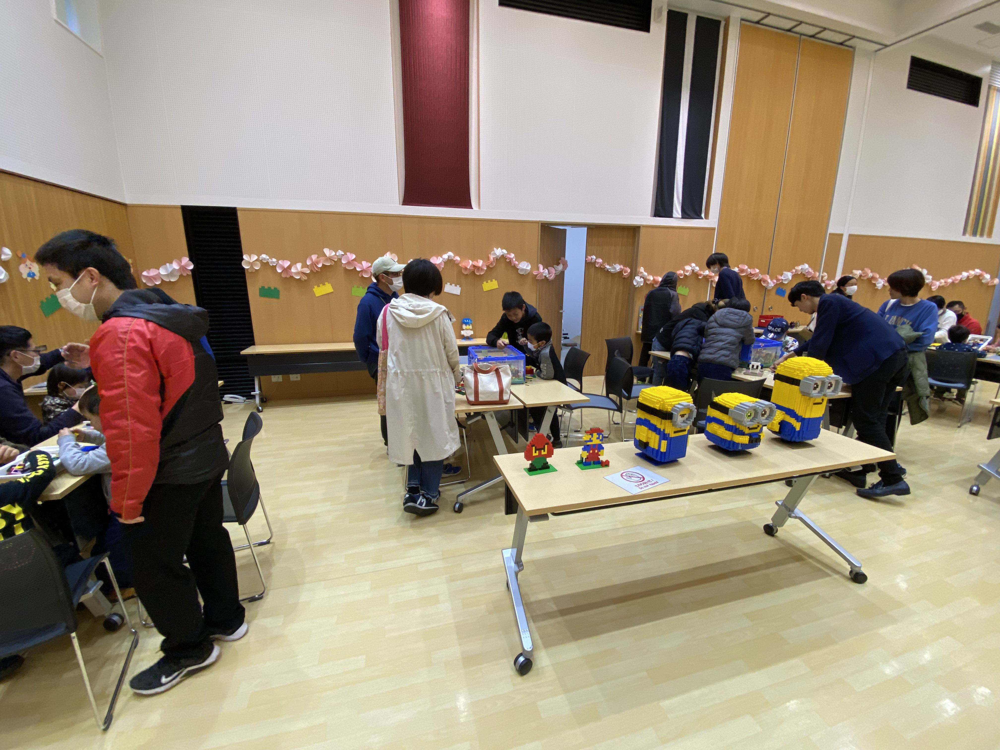

西脇市こどもプラザ ワークショップ
こんにちは。大阪大学レゴ部の オレオ です。
毎年、西脇市の茜が丘複合施設で3月に開催されている「こどもプラザフェスタ」にて、今回もワークショップを開かせてもらいました。
- 開催日時：2023年3月26日(日)
- 参加人数：部員 4名
- 企画内容：西脇市こどもプラザ ワークショップ
今回のワークショップでは、部員が制作した作品を展示するとともに、大量のレゴブロックを用意し、特にテーマなどは設定せずに、子どもたちに自由に作品を作ってもらいました。参加してくれたのは地元の小学生が中心で、中には親御さんと一緒に作品を作っている人もいました。
当日はかなり雨が降っていて、例年よりも来場者が少なくなるかもしれないと思っていましたが、実際はそんなこともなく、ワークショップの時間が始まるとすぐに満員になりました。できるだけ多くの子どもたちにレゴに触れてもらおうと、席の数を増やすなどの対応をしましたが、最後までほぼ全ての席が埋まるほどの大盛況でした。
また、作品展示の部も好評で、多くの人が作品を見に来てくれて、写真を撮っていってくれました。
ワークショップを通して感じたのは、小さな子どもたちの想像力は素晴らしいということです。自分の理想の家や部屋、乗り物やキャラクターなどの作品を様々なパーツを使って作ってくれましたが、実際に実在しているものを“再現する”のではなく、頭の中の思い描いた世界を“創り出す”と表現すればよいのでしょうか。これは小学生特有の素晴らしい能力であり、我々の作品制作の参考になりました。
オレオ